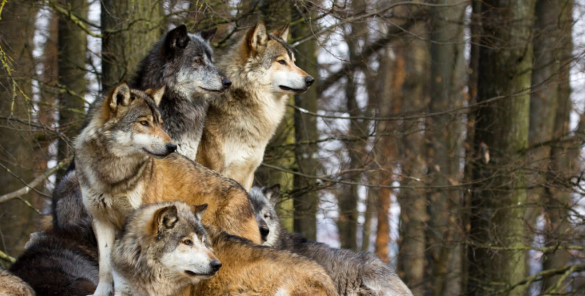

Voici mais annimaux preférér dans la mer,le ciel , et la terre
Animaux dans la mer:
L'orque, ou épaulard (Orcinus orca), est une espèce de mammifères
marins du sous-ordre des cétacés à dents, les odontocètes. Elle a une
répartition cosmopolite ; elle vit dans les régions arctiques et
antarctiques jusqu'aux mers tropicales. Son régime alimentaire est
très diversifié, bien que les populations se spécialisent souvent dans
des types particuliers de proies. Certaines se nourrissent de
poissons, tandis que d'autres chassent les mammifères marins tels que
les lions de mer, les phoques, les morses et même de grandes baleines
(généralement des baleineaux). Les orques sont considérées comme des
superprédateurs. Les anglophones les surnomment baleines tueuses
(killer whales), bien que le genre Orcinus soit propre aux seules
orques.
Cliqué ici pour une videour l'orque
Le dauphin possède une particularité : il a une respiration volontaire
et doit “penser” à respirer en remontant régulièrement à la surface de
l'eau pour replonger ensuite en apnée. C'est pourquoi le mammifère ne
dort jamais complètement : quand une partie de son cerveau se repose,
une autre continue de fonctionner. À l'état sauvage, ils consomment de
préférence des poissons (maquereaux, sprats, merlans…), mais aussi des
céphalopodes (calamars, poulpes, seiches…) ou encore des crustacés
(crabes, crevettes…).
Les trois requins les plus dangereux au monde sont le grand requin
blanc, le requin tigre et le requin bouledogue. À eux trois, ces
prédateurs sont responsables de la grande majorité des attaques
mortelles.9 Le requin-tigre est un grand requin commun dans le monde
entier. Au large de l'Amérique du Nord, il est habituellement présent
sur la côte est de Cape Cod à la Floride et dans le golfe du Mexique,
tandis que sur la côte ouest, on le trouve à partir de la Californie
vers le sud.
Cliqué ici pour une vidéo sur les dauphin
Animaux dans ciel
Les aigles royaux français sont présents dans les Alpes, les Pyrénées,
la Corse et le Massif Central. Depuis la fin des années 60, le nombre
de couple estimé est passé d'une soixantaine à environ 250
actuellement, la moitié environ dans les 5 parcs nationaux de montagne
Il mange toutes sortes d'animaux : des lièvres, des petits oiseaux,
des jeunes renards, des lézards… Si l'aigle royal ne trouve pas de
proies vivantes, il peut s'attaquer aux charognes (animaux déjà
morts).
clique ici pour une video sur l'aigle
Ses principaux prédateurs, à part l'homme, sont les grands rapaces,
tels les aigles, le Hibou grand-duc (Bubo bubo) ou de grands faucons
comme le Faucon gerfaut (Falco rusticolus). Certains mammifères
prédateurs, tels les chats sauvages, les gloutons ou les renards
peuvent aussi à l'occasion se saisir d'un faucon. Cosmopolite, le
Faucon pèlerin niche sur tous les continents, Europe, Asie, Afrique,
Australie, Amérique du Nord et du Sud et de nombreuses îles et
archipels en Océanie. Les faucons sont attaqués et peuvent être mangés
par des faucons plus gros, des aigles, des hiboux, des ratons laveurs,
des renards et des serpents . Leur position dans la chaîne alimentaire
les maintient hors de portée de la plupart des prédateurs
Clique ici pour une vidéo sur le faucon
Où vit la colombe ? Elle s'acclimate très bien aux milieux ruraux
comme urbains et s'implante un peu partout du moment qu'elle trouve
une abondante source de nourriture. Lorsqu'elle vit en captivité, la
colombe apprécie l'espace d'une volière pour déployer ses ailes et
voler. La Colombe blanche vit généralement 8 à 12 ans et elle peut
vivre plus longtemps avec de bons soins. L'alimentation de la Colombe
blanche est essentiellement Granivore - Mélange colombes et
tourterelles - petits insectes.
Clique ici pour video sur la colombes
Animaux sur la terre
Le Tigre (Panthera tigris) est une espèce de mammifère carnivore de la
famille des félidés (Felidae) du genre Panthera. Aisément
reconnaissable à sa fourrure rousse rayée de noir, c'est le plus grand
félin sauvage et l'un des plus grands carnivores terrestres, dépassé
seulement par les plus grandes espèces d'ours. L'espèce est divisée en
neuf sous-espèces présentant des différences mineures de taille ou de
comportement. Superprédateur, il chasse principalement les cerfs et
les sangliers, bien qu'il puisse s'attaquer à des proies de taille
plus importante comme les buffles jusqu'à l'énorme gayal (rarement
attaqué en raison de sa taille imposante et de ses cornes qui peuvent
tuer un tigre adulte). Jusqu'au xixe siècle, le tigre était réputé
mangeur d'hommes, ce qu'il peut être occasionnellement bien que ce
soit rare. Comme la plupart des félins, c'est un animal généralement
solitaire ; le mâle possède un territoire qui englobe les domaines de
plusieurs femelles et ne participe pas à l'éducation des petits.
Le Lion (Panthera leo) est une espèce de mammifères carnivores de la
famille des Félidés. La femelle du lion est la lionne, son petit est
le lionceau. Le mâle adulte, aisément reconnaissable à son importante
crinière, accuse une masse moyenne qui peut être variable selon les
zones géographiques où il se trouve, allant de 145 à 180 kg pour les
lions d'Asie à plus de 225 kg pour les lions d'Afrique. Certains
spécimens très rares peuvent dépasser exceptionnellement 300 kg. Un
mâle adulte se nourrit de 7 kg de viande chaque jour contre 5 kg chez
la femelle. Le lion est un animal grégaire, c'est-à-dire qu'il vit en
larges groupes familiaux, contrairement aux autres félins. Son
espérance de vie, à l'état sauvage, est comprise entre 7 et 12 ans
pour le mâle et 14 à 20 ans pour la femelle, mais il dépasse
fréquemment les 30 ans en captivité. Le lion mâle ne chasse
qu'occasionnellement, il est chargé de combattre les intrusions sur le
territoire et les menaces contre la troupe. Le lion rugit. Il n'existe
plus à l'état sauvage que 16 500 à 30 000 individus dans la savane
africaine, répartis en deux sous-espèces, et environ 300 dans le parc
national de Gir Forest (nord-ouest de l'Inde). Il est surnommé « le
roi des animaux » car sa crinière lui donne un aspect semblable au
Soleil, qui apparaît comme « le roi des astres ». Entre 1993 et 2017,
sa population a baissé de 43 %1.

Son seul ennemi, l'humain, le chasse sportivement et le tue pour
protéger le bétail, et il l'a éliminé des régions habitées de
l'Amérique du Nord où le coyote ou les chiens sauvages ont pris sa
place. Le Loup vit en bande de trois à sept individus parmi lesquels
on compte un mâle dominant et sa louve reproductrice. Dans les faits,
un loup normalement essaie de s'éloigner de l'homme afin d'éviter
toute rencontre. Toutefois, comme n'importe quel autre animal sauvage,
un loup peut se montrer imprévisible, voire agressif, s'il s'estime en
danger.